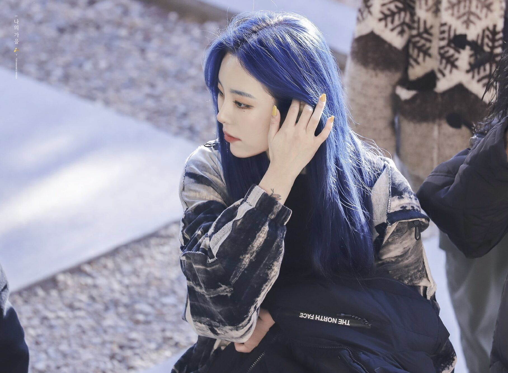

作为一个在高考前一直坚定地要在大学学数学的人，其实根本没有想到自己会来到成电，来到软件工程这个专业。我作为一个完完全全的小白，能在一个多月中学习很多知识，并且真的在大一进入了我理想中的工作室，我真的感受到了努力的幸福，也开始相信我能让我的大学生活会像繁花盛开的森林一样烂漫美好。
我对微光的印象一直特别好，至今记得在9月开学之初，在做我们微光的日常基础：用hexo搭博客时，Nate学长帮我解答问题一直到了凌晨1点半，那天晚上我真的非常感动，并真正对微光产生了强烈的向往之情。然后就是10号的招新会，听大佬们分享自己的学习与工作经历，真的开阔了我的眼界，记得当时因为错过了一页PPT，想找当时一直坐在第一排录像的学长要视频，被学长认真地拒绝说“这是内部资源”，但那位学长还是热心地加了我和我室友的qq，把那页PPT发给我们了，后来发现那位学长就是波西，我的后端命题人之一，在我之后交题前联系命题人时，看到学长的性别为女，差点喊一声学姐，然后突然发现是好友，才想起是之前加的学长。进入工作室之后，还发现了同样喜欢Nirvana的学长，相当惊喜了属于是。可是为什么没有学姐啊呜呜。
首先是一位国际象棋爱好者，我的棋盘陪着我长大，的确成为了一位我最珍贵的朋友，在空闲的时候与对手厮杀一场快棋，是一种发泄压力的好方式。
然后是音乐。各种风格的音乐我都爱，摇滚，枪花涅槃平克金属...全都喜欢；说唱，学了很多Eminem的歌，也会很多韩语的rap；kpop，当然也有喜欢的韩团，特别是mamamoo，安利一下右边的mamamoo的辉人，嗓音真的太好听。
最后是作曲，其实也算音乐吧，这个页面的录音室图片是我19年录制我自己写的运动会会歌时去的录音室，在繁忙的学习之后，抽出一小点时间就能写出一些美好可爱的旋律，也算是我放松自己的方式吧。
总的来说，我的大学生活目前很美好，有汗水也有收获，希望我最终能像我在招新表中说的那样，以尘雾之微，补益山海；荧烛微光，增辉日月。